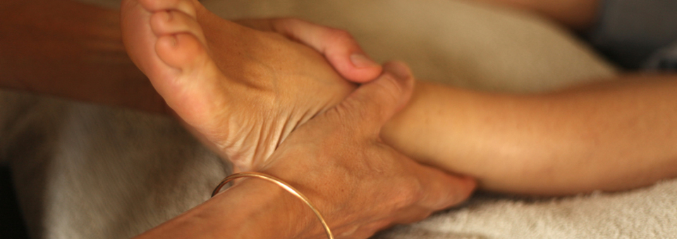
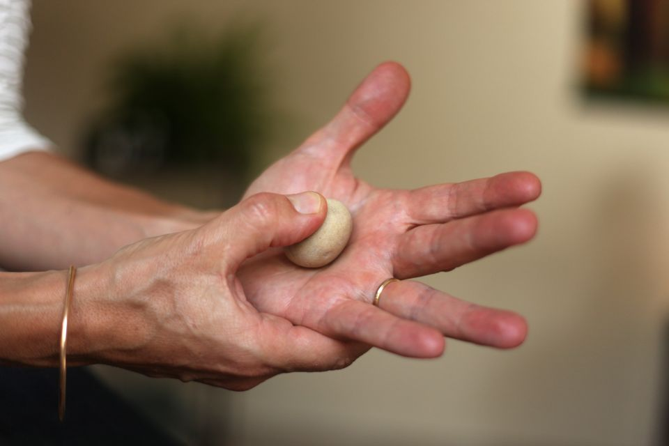
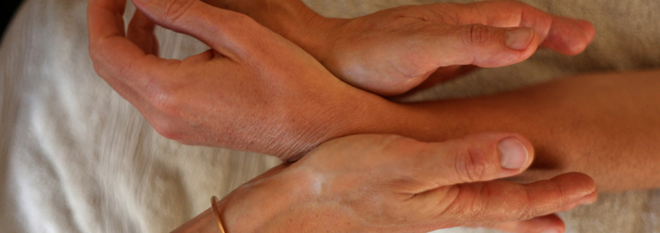
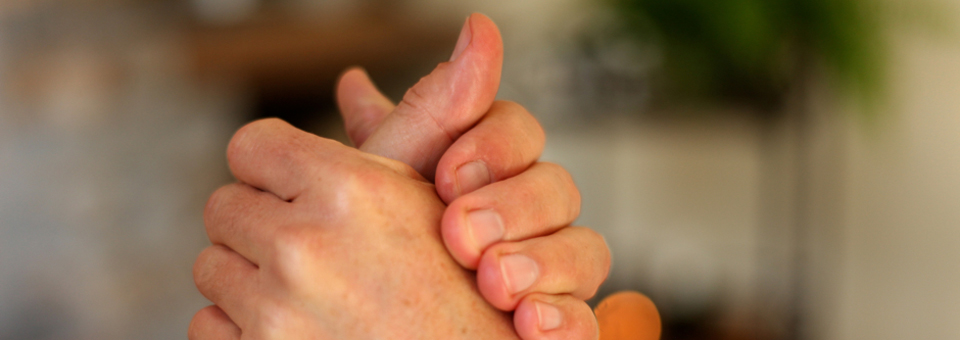
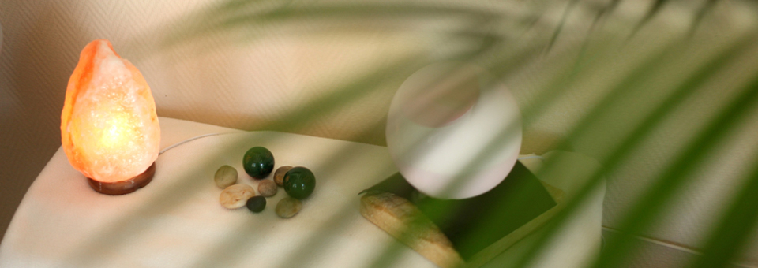

Que vous cherchiez à soulager une douleur, réduire votre stress ou simplement prendre soin de vous, je propose un soin adapté à votre situation.

C'est le soin phare de ma pratique. Le pied, avec ses 7 000 terminaisons nerveuses, est une véritable carte du corps humain. En stimulant avec précision les zones réflexes de la plante, du dessus et des côtés du pied, j'agis à distance sur l'ensemble de vos organes et systèmes.
La séance se déroule allongé(e) sur une table de soin confortable. Les pieds sont nettoyés puis travaillés pendant environ 45 minutes. Vous n'avez besoin de retirer que vos chaussures et chaussettes.

La réflexologie palmaire utilise les mains comme support de travail. Les zones réflexes de la paume, du dos de la main et des doigts cartographient également l'ensemble du corps, bien que de façon légèrement différente des pieds.
Ce soin est particulièrement adapté aux personnes qui ont une sensibilité extrême des pieds, qui souffrent de mycoses, de blessures aux pieds, ou qui préfèrent tout simplement un travail sur les mains. Il peut aussi être pratiqué en complément de la réflexologie plantaire.

La grossesse est une période extraordinaire mais qui s'accompagne souvent de nombreux inconforts : nausées, douleurs lombaires, jambes lourdes, fatigue, stress, insomnie… La réflexologie peut apporter un soulagement naturel et doux tout au long de la grossesse.
Je propose des séances spécialement adaptées aux femmes enceintes, avec des techniques douces et des zones de travail sélectionnées pour votre sécurité et votre confort. Certaines zones sont évitées ou travaillées avec une attention particulière pendant la grossesse.
Le premier trimestre (0–3 mois) est contre-indiqué par précaution. Mentionnez toujours votre grossesse lors de la prise de rendez-vous.

Les enfants répondent souvent très bien à la réflexologie, parfois mieux que les adultes ! Leur corps est plus réceptif et les résultats peuvent être rapides. Les pressions sont légères, douces et adaptées à leur âge.
La réflexologie peut aider les enfants souffrant de troubles du sommeil récurrents, d'anxiété scolaire, de problèmes ORL fréquents, de difficultés digestives ou de douleurs de croissance. Les séances sont plus courtes pour que l'enfant se sente à l'aise.
Vous cherchez des accessoires bébé made in France ? Découvrez Enfance Made in France, notre partenaire spécialisé en puériculture et accessoires pour enfants.

Vous préférez être soigné(e) dans le confort de votre domicile ? Pas de problème ! Je me déplace avec tout le matériel nécessaire.
Ce service est particulièrement adapté aux personnes à mobilité réduite, aux seniors, aux personnes en convalescence, ou tout simplement à ceux qui préfèrent la tranquillité de leur chez-soi après un soin relaxant (pas besoin de conduire pour rentrer !).
Vous ne savez pas quoi offrir ? Un chèque cadeau pour une séance de réflexologie est un cadeau original, utile et qui fait vraiment plaisir.
Idéal pour les anniversaires, fêtes des mères, Noël, ou tout simplement pour faire plaisir à quelqu'un qui en a besoin.